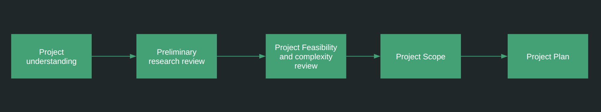

AI/ML Project startup and Requirement Analysis consultation
 Thinking of starting a new project for solving your business requirements leveraging Artificial Intelligence and Machine Learning techniques? This can be a very daunting process especially if you don’t have experience with managing prior AI projects. Many important questions needs to be answered and things to be clarified, such as:
- Understanding your business idea and articulating it properly from technical perspective
- Assessing the feasibility of the development and success of the project
- How complex from development perspective the problem is?
- What type of data is needed? How much data is needed? Do I have the needed data?
- What kind of team structure would be required to solve this problem
- Is a small POC needed before jumping into large scale project development?
- What kind of prototypes if required should be built first?
- Time requirement to develop the solutions?
- Budget requirements?
- Reviewing how novel your business problem is? Researching how other businesses have solved similar problems
- Finally, creating a project plan depending on the team structure and time deadline.
If these questions are not answered and project is started pre-maturely, the probability of failure of the project and difficulty in delivering increases dramatically.
Having extensive experience in developing, architecting and planning Machine learning projects I can be your consultant helping to make the first steps correctly so that your project delivery journey is smoother and in correct direction.